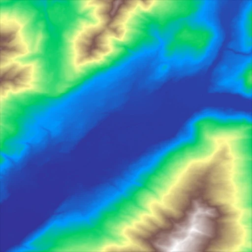
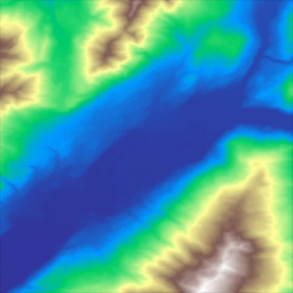
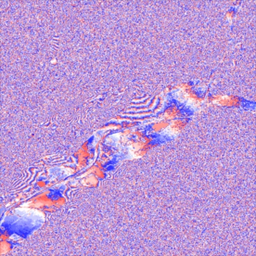

high-level api
Measure, pick, run.
The geozl high-level API is three functions.
profile measures every candidate graph on your tile and returns one row each, with ratio and throughput, so the choice comes from your own data instead of a default somebody else picked.
compress runs one graph and returns the frame. It never searches, method names the graph to use and profile is what tells you which one to name.
decompress hands the array back. The frame carries the bytes but not the sign or the shape, so dtype and width say how to read them.

the api geozl 0.7.6
signature profile(tile, *, method="planar", reps=5, max_error=0) → list[dict]
planar (default), med, delta_w, delta_n, average, wp_static, none, or None to sweep every predictor unbiased. Here it decides which grid gets built and measured.graph, ratio, encode_mbps, decode_mbps, shannon_pct. Sorted by ratio, best first.signature compress(tile, *, method="planar>zigzag>transpose>entropy", width=None, max_error=None) → bytes
width given. Native byte order, 1, 2, 4 or 8 bytes per element.profile table. Defaults to planar>zigzag>transpose>entropy, which is the graph that wins most smooth integer rasters.tile.shape[-1] for a 2‑D array.None or anything ≤ 0 is lossless. A positive bound prepends the quant step that keeps every value within that error.Raises ValueError for a bad argument, and RuntimeError carrying the encoder's own message if compression fails.
signature decompress(frame, *, dtype=None, width=None) → ndarray
"int16" reads the 2‑byte elements as signed. Left off, you get an unsigned view of the right width.the tile
import numpy as np
import rasterio
from rasterio.windows import Window
import geozl
url = ("https://copernicus-dem-30m.s3.amazonaws.com/"
"Copernicus_DSM_COG_10_N45_00_E006_00_DEM/"
"Copernicus_DSM_COG_10_N45_00_E006_00_DEM.tif")
with rasterio.open(url) as src:
tile = np.round(
src.read(1, window=Window(1000, 1000, 512, 512))
).astype(np.int16)
raw = tile.nbytesEvery number on this page comes from one run on this tile, a window of the Copernicus DEM GLO‑30 over the Mont Blanc massif, public on AWS Open Data (© ESA / Airbus / DLR). Elevation is in whole metres, so the cast to int16 is exact and free. For results across datasets see the Benchmark page.
what a graph is
A graph is the compressor itself. OpenZL has no single fixed algorithm, you wire up a chain of transforms and coders, and that chain is the graph.
Every candidate has the same shape. An optional predictor, then zigzag to fold the signed residual to unsigned, then an optional layout step, then a backend that does the coding. The recipe string names the pieces in order, so planar>zigzag>transpose>entropy is one graph and id>store_lo is another.
Which one wins depends on the data, so geozl builds all 48 combinations and measures them on your tile rather than guessing.
Predictors · method seeds the search from one
- planar
- Predicts each pixel from its neighbours as
W + N − NW, the local gradient. Good default for smooth fields. - delta_wdelta_n
- The plain difference from the west or the north neighbour.
- med
- The median predictor, JPEG‑LS style. Picks among
W,NandW+N−NWby the local gradient. Best ratio on many tiles, slower to decode. - average
- Predicts from the average of the neighbours.
- wp_static
- Fits a small weighted predictor to the tile and stores the weights in the frame header.
- delta_1d
- OpenZL's built‑in 1d integer delta, with no spatial notion at all.
- id
- No predictor. The raw stream goes straight to a backend, the escape hatch for a tile a predictor does not help.
Layout and backends · what closes the graph
- entropy
- Adaptive FSE and Huffman.
- zstdfield_lz
- LZ backends, which also catch the repetition that entropy coding alone misses.
- transpose
- Splits the
int16into byte lanes, the low byte and the high byte as separate streams, then codes them. This is the byte shuffle blosc and EOPF use, soid>transpose>zstdis exactly the EOPF baseline. - store_lo
- Transposes, then stores the low lane raw because it is sensor noise and not worth coding, and entropy‑codes the high lanes. Wins on Sentinel‑2, where the low byte is irreducible.
profile measure the candidates
profile compresses and decompresses every graph in the grid and returns one row per graph. The timing runs in C with the checksum off, so the speed is the pure codec and not the Python call or frame verification.
method sets the prior. "planar" builds the grid from planar and id, None sweeps every predictor, "none" is the id branch alone. reps is how many times each graph is timed, and the fastest rep is kept.
rows = geozl.profile(tile, method=None,
reps=5, max_error=0)
rows[0]['graph'], rows[0]['ratio']Forty‑eight graphs, four of them worth anything. Every point below the line is beaten on both axes at once by something above it, and those four are the only ones worth naming in method. store and speed sit on the front, at opposite ends of it, smallest frame against fastest decode. balanced lands just under store, giving up 0.01× of ratio and gaining nothing back on this tile.
Show the other 38Hide
shannon_pct is the frame size against the tile's order‑0 entropy. Over 100 means the graph beat that entropy by finding structure the byte histogram misses, which every spatial predictor here does by a wide margin.
compress run it for real
compress runs one graph. It does not search, does not measure and does not fall back. You name the graph with method, it builds that graph and encodes the tile with it.
That split is the whole design. profile is the benchmark you run once, when the data changes, on one representative tile. compress is what runs on every tile after that, with the answer already decided and nothing left to decide at call time.
best = geozl.profile(tile)[0]['graph'] # the slow call, run once frame = geozl.compress(tile, method=best) # the fast call, run always
The same method then goes on every other tile in the dataset without profiling any of them, which is the point of splitting the two calls.
frames = [geozl.compress(t, method=best) for t in tiles]max_error bounded‑error lossy
By default compress is lossless, and so is any max_error of 0 or less. Pass a positive max_error and it prepends a quantisation step that trades exactness for ratio with a hard guarantee. No reconstructed value moves by more than max_error.
The quantiser is uniform, and the rounding to the nearest multiple of the step is what costs at most half a step. What travels in the frame depends on the type. On integers the encoder stores the reconstruction and the decoder copies it. On floats it stores the index, because quantising a float is what turns it into the small integers the downstream predictors compress, and the decoder multiplies back. Both forms reconstruct the same values.
Each point is one compress call on the same tile. The first four sit exactly on the lossless line because their step truncates to 1, so they are lossless too. Budgets that floor to the same step give the same frame, which is why the curve is a staircase. Past the knee you keep paying error and the frame barely shrinks.
frame = geozl.compress(tile, max_error=2.0) back = geozl.decompress(frame, dtype="int16", width=512) err = np.abs(back.astype(np.int32) - tile.astype(np.int32)).max()
decompress get the array back
geozl works one level below the array. A tile enters OpenZL as a numeric stream described by one thing, the bytes per element. An int16 and a uint16 are both two bytes to the frame, which stores the exact bytes but not the sign, and not that they were 512×512 rather than a flat vector.
So on the way out you say how to read the bytes. dtype reinterprets each element, and leaving it off gives an unsigned view of the right width. width reshapes to 2d, and leaving it off gives a flat 1d array.
This is deliberate. geozl is the fast primitive that carries no metadata it does not need to compress. The layer above it, rumi, owns the dataset, wraps each frame with the real dtype and shape, and decompresses with no arguments at all.
back = geozl.decompress(
frame, dtype="int16", width=512
)the loop measure, pick, run
rows = geozl.profile(tile) # see what wins best = rows[0]['graph'] # take the top recipe frame = geozl.compress(tile, method=best, max_error=4) # run it, no search back = geozl.decompress(frame, dtype='int16', width=512)


Ten times smaller, and every value within 4 m of where it started. The error panel is stretched to ±5 m so there is anything to see at all. What structure is left follows the valley floor and the ridge lines, which is exactly where the terrain stops being locally planar.